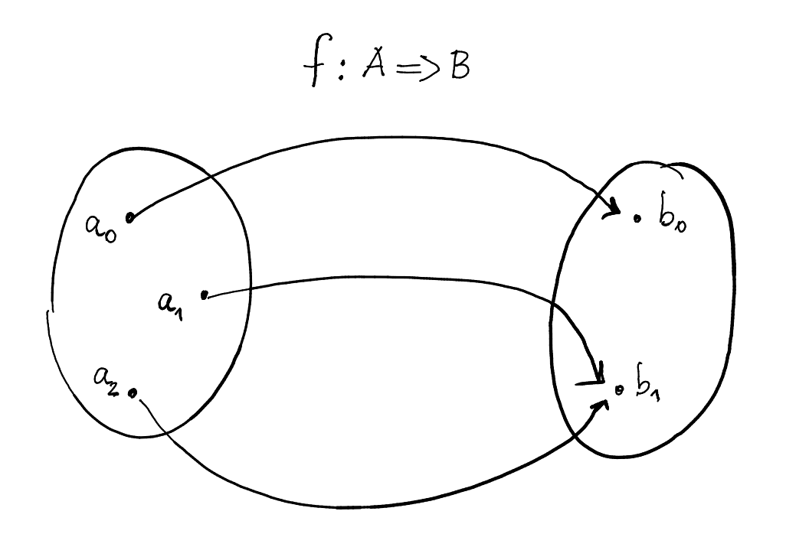

class: center, middle # Don't Fear the Monad ### Pierangelo Cecchetto #### (@pierangelocecc) ### YOLT talks ##### 01-11-2018 --- # Me (as a dev) - 2004-2015 Java - E-commerce, Banking - Spring, hibernate, etc... -- - GoF patterns (copy/paste/change) -- --- # Me (as a dev) - 2013... - FP - Types --- # Agenda - FP definition - Typeclasses - A few monads with examples --- # What is FP? - Programming with `map`, `flatMap`, `filter` ? -- - Programming with `implicit class` / extension methods ? ```scala val x: Int = 2 // x: Int = 2 implicit class RichInt(i: Int) { def square: Int = i * i } // defined class RichInt x.square // res0: Int = 4 ``` --- # Mathematical functions  -- - **Total** -- - **Deterministic** -- - **Pure** --- # Referential transparency ??? This is the property that programming with Pure functions buy us Consider the process of mathematical reasoning and proof advancement -- _- Can I replace an expression with its definition?_ -- Arithmetic ```scala x + 5 + x x = 2 > ? ``` -- ```scala 2 + 5 + 2 > 9 ``` --- # Referential transparency Program ```scala val x: Int = 2 // x: Int = 2 x + 5 + x // res1: Int = 9 ``` -- ```scala 2 + 5 + 2 // res2: Int = 9 ``` -- ### Conclusion `val x: Int = 2` is _Referentially Transparent_ --- # Referential transparency Program ```scala val x: Int = { println("Hello"); 2 } // Hello // x: Int = 2 x + 5 + x // res3: Int = 9 ``` -- ```scala { println("Hello"); 2 } + 5 + { println("Hello"); 2 } // Hello // Hello // res4: Int = 9 ``` -- ### Conclusion `val x: Int = { println("Hello"); 2 }` is **not** Referentially Transparent --- # Referential transparency - Replace equals for equals -- - Equational reasoning -- - Local reasoning --- # Referential Transparency - ~~Shared Mutable State~~ -- - ~~Exceptions~~ -- - ~~Partial functions~~ -- - ~~Eager side effects~~ -- - ~~Program with variables and statements~~ Program with Values and Expressions --- # Typeclasses ??? Let's talk about typeclasses. If we want to program with functions, and we have a strongly typed language at hand, it is natural to define to which objects these functions can be applied Typeclasses are a supreme way to model separation of concerns, and yet make sure we take care of all the necessary concerns, at compile time -- - Separation of concerns -- - Widespread in FP -- - _Ad hoc inheritance_ -- - Declare properties - Declare Laws (TCK) -- - Specify which types enjoy these properties - Or have the compiler deriving them for you -- - Compile-time check --- # Typeclasses ```scala trait Show[A] { def show(a: A): String } ``` ??? A very simple example of a typeclass is `Show` String representation of a class. We have already `toString` but if we forget to override it we end up having strange @ClassName#hashCode, and compiler says nothing! We need stronger guarantees! -- ```scala case class Dog(name: String) ``` -- ```scala implicit val show: Show[Dog] = new Show[Dog] { def show(d: Dog) = s"a dog named ${d.name}" } ``` -- ```scala val charlie = Dog("Charlie") // charlie: Dog = Dog(Charlie) implicitly[Show[Dog]].show(charlie) // res5: String = a dog named Charlie ``` --- # Typeclasses Having to type every time `implicitly[Show[Dog]]` is a bit noisy -- Summoner ```scala object Show { def apply[A: Show]: Show[A] = implicitly } ``` -- ```scala Show[Dog].show(charlie) // res6: String = a dog named Charlie ``` -- Rich Syntax ```scala implicit class ShowSyntax[A: Show](a: A) { def show: String = Show[A].show(a) } ``` ```scala val charlie = Dog("Charlie") // charlie: Dog = Dog(Charlie) charlie.show // res7: String = a dog named Charlie ``` ??? In the next slides we will talk about specific type classes using the std version and the syntax enrichment version in an equivalent manner --- # Typeclasses ```scala def log[A: Show](a: A): String = s"I am logging about [${Show[A].show(a)}]" // log: [A](a: A)(implicit evidence$1: Show[A])String ``` -- ??? What we can do with Show? Explicitly declare how it should behave for a type Without forcing any inheritance All checked by the compiler -- ```scala val jack = Dog("Jack") // jack: Dog = Dog(Jack) log(jack) // res8: String = I am logging about [a dog named Jack] ``` -- ```scala case class Cat(name: String) // defined class Cat val oscar = Cat("Oscar") // oscar: Cat = Cat(Oscar) log(oscar) // <console>:18: error: could not find implicit value for evidence parameter of type Show[Cat] // log(oscar) // ^ ``` -- ## Compilation errors FTW!!! ??? Compiler is your friend, make use of it! --- # Semigroup ??? Semigroup is math term to express the fact that I can take 2 things of 1 type and produce another thing of the same type (internal, binary operation) TODO: make picture -- - Append ```scala trait Semigroup[A] { def combine(a: A, b: A): A } ``` -- ```scala Semigroup[Int].combine(100, 10) // res0: Int = 110 ``` -- ```scala Semigroup[List[Int]].combine(List(1,2,3), List(4,5,6)) // res1: List[Int] = List(1, 2, 3, 4, 5, 6) ``` --- # Semigroup - `|+|` operator ??? As we have seen, it is frequent practice to enrich the syntax of a type that has a type class with an operator that delegates to the typeclass definition -- ```scala 100 |+| 10 // res2: Int = 110 List(1,2,3) |+| List(4,5,6) // res3: List[Int] = List(1, 2, 3, 4, 5, 6) ``` --- # Semigroup Derived instances - If `A` is a Semigroup, `Map[K, A]` is a Semigroup ```scala val m1 = Map("cat" -> List(1,2,3), "dog" -> List(4,5,6)) // m1: scala.collection.immutable.Map[String,List[Int]] = Map(cat -> List(1, 2, 3), dog -> List(4, 5, 6)) val m2 = Map("cat" -> List(10), "cow" -> List(40)) // m2: scala.collection.immutable.Map[String,List[Int]] = Map(cat -> List(10), cow -> List(40)) ``` ??? `Map[K, V]` is a semigroup if V is a semigroup, therefore we have a semigroup in maps induced by the semigroup in Values -- ```scala m1 |+| m2 // res4: Map[String,List[Int]] = Map(cat -> List(1, 2, 3, 10), cow -> List(40), dog -> List(4, 5, 6)) ``` - If `A` is a semigroup, `Option[A]` is a semigroup ```scala 1.some |+| 2.some // res5: Option[Int] = Some(3) 1.some |+| None // res6: Option[Int] = Some(1) ``` --- # Semigroup ```scala def twice[A: Semigroup](a: A) = a |+| a // twice: [A](a: A)(implicit evidence$1: cats.Semigroup[A])A ``` ??? We can derive functions in terms of base operations, e.g. a function that combines an element with itself -- ```scala scala> twice(List(1,2,3)) res7: List[Int] = List(1, 2, 3, 1, 2, 3) ``` -- ```scala twice(Map("cat" -> List(1,2,3), "dog" -> List(4,5,6))) // res8: scala.collection.immutable.Map[String,List[Int]] = Map(cat -> List(1, 2, 3, 1, 2, 3), dog -> List(4, 5, 6, 4, 5, 6)) ``` --- # Monoid - combine 2 things ??? If we enrich a semigroup by providing a neutral element, we get a Monoid -- - has neutral element -- ```scala trait Monoid[A] { def combine(a: A, b: A): A def empty: A } ``` -- - Monoid Laws ```scala (a |+| b) |+| c === a |+| (b |+| c) ``` -- ```scala a |+| empty === empty |+| a === a ``` -- Grouping is irrelevant ```scala scala> List(1,2,3) |+| List(3,4,5) |+| List(7,8,9) res9: List[Int] = List(1, 2, 3, 3, 4, 5, 7, 8, 9) ``` ??? This simple property is fundamental when designing distributed systems --- # Monoid ```scala def fold[A: Monoid](xs: List[A]) = xs.foldLeft(Monoid[A].empty)(Monoid[A].combine) // fold: [A](xs: List[A])(implicit evidence$1: cats.Monoid[A])A ``` ??? Again, we can derive operations totally generic on monoids that work for _any_ monoid -- ```scala scala> List(1,2,3,4).combineAll res10: Int = 10 ``` -- ```scala scala> List(Some(1), Some(2), None).combineAll res11: Option[Int] = Some(3) ``` ??? Here we used the fact that given a `Monoid[A]`, we have for free a `Monoid[Option[A]]` -- ```scala case class Features(x: Double, y: Double) implicit val monoid: Monoid[Features] = new Monoid[Features] { def combine(a: Features, b: Features): Features = Features(a.x + b.x, a.y + b.y) def empty: Features = Features(0, 0) } val samples = List(Features(50, 50), Features(40,30), Features(10, 20)) ``` ```scala val added = samples.combineAll // added: Features = Features(100.0,100.0) ``` ??? We will see in the section about applicative a natural application of these concepts --- # Monoid Why should I care? - Addition of homogeneous quantities - Error accumulation (form validation) - Log accumulation - (Map) Reduce, parallel processing, scatter-gather --- # But wait... --- # Function Composition ??? What are effects? Let's consider a simple example, we have a devops application that given the name of the application needs to find the location of configuraiton -- ```scala val lookupPath: String => ConfigLocation = appName => ConfigLocation("application-config-point") ``` ??? And then read this configuration from the location -- ```scala val lookupConfig: ConfigLocation => AppConfig = configLocation => AppConfig(port = 80, rootUrl = "reactive") ``` -- Composition ```scala val bootstrap: String => AppConfig = lookupPath andThen lookupConfig ``` ??? Then we can compose these 2 functions together -- ```scala bootstrap("reactive-app") // res12: AppConfig = AppConfig(80,reactive) ``` -- Or ```scala val bootstrap: String => AppConfig = lookupConfig compose lookupPath ``` -- ```scala bootstrap("reactive-app") // res13: AppConfig = AppConfig(80,reactive) ``` --- # Effects Enrich a computation ??? Let's now introduce Effects. We call effects anything that enriches our domain to express specific, well defined behavior, e.g. - optionality - Error - Reading from context - State changes Let's see how we can enrich our functions to express the potential failure of computation -- ```scala sealed trait Either[+E, +A] case class Left(e: E) extends Either[E, Nothing] case class Right(a: A) extends Either[Nothing, A] ``` -- ```scala type ErrorOr[A] = Either[String, A] ``` ```scala val lookupPath: String => ErrorOr[ConfigLocation] = appName => { if (appName == "reactive-app") Right(ConfigLocation("location")) else Left(s"$appName app not found") } val lookupConfig: ConfigLocation => ErrorOr[AppConfig] = lookupPath => { if (lookupPath == ConfigLocation("location")) Right(AppConfig(port = 80, rootUrl = "reactive")) else Left(s"$lookupPath path not found") } ``` --- # Effects ```scala sealed trait Either[+E, +A] { self => def flatMap(f: A => Either[E, B]): Either[E, B] = self match { case Right(a) => f(a) case Left(e) => Left(e) } } ``` -- ```scala val bootstrap: String => ErrorOr[AppConfig] = location => lookupPath(location).flatMap(lookupConfig) ``` ??? The fact that `Either` is equipped with a `flatMap` allows us to compose 2 functions -- ```scala bootstrap("reactive-app") // res14: ErrorOr[AppConfig] = Right(AppConfig(80,reactive)) bootstrap("my-app") // res15: ErrorOr[AppConfig] = Left(my-app app not found) ``` ??? Let's see how far we can go with effects composition --- # Effects ```scala f: A => B ``` ??? We start with a function `A => B` -- ```scala f: A => ErroOr[B] ``` -- ```scala f: A => F[B] ``` ??? And we enrich the output to an `F[B]`, in our case an Either, so we can conclude that effects... -- ```scala F[A] = Either[String, A] ``` - Effects express richer behaviour -- - Effects != Side Effects ??? To quote a famous guy in the Scala sphere -- > _Effects are good, side effects are bugs_ (Rob Norris) -- ```scala type Id[A] = A f: A => B <---> f: A => Id[B] ``` --- # Effects Composition ```scala val lookupPath: String => ErrorOr[ConfigLocation] = ??? val lookupConfig: ConfigLocation => ErrorOr[AppConfig] = ??? val bootstrap: String => ErrorOr[AppConfig] = location => lookupPath(location).flatMap(lookupConfig) ``` ??? How did we compose our effects? We used `flatMap` --- # Effects Composition ```scala val lookupPath: String => Option[ConfigLocation] = ??? val lookupConfig: ConfigLocation => Option[AppConfig] = ??? val bootstrap: String => Option[AppConfig] = location => lookupPath(location).flatMap(lookupConfig) ``` ??? If the effect was an `Option`, the expressions would look almost the same, just the effect we were expressing was Optionality of the output, without information about the specific error --- # Effects Composition ```scala val lookupPath: String => IO[ConfigLocation] = ??? val lookupConfig: ConfigLocation => IO[AppConfig] = ??? val bootstrap: String => IO[AppConfig] = location => lookupPath(location).flatMap(lookupConfig) ``` ??? If the effect was an `Task`, the expressions would look almost the same, just the effect we were expressing was Asynchronicity, e.g. some api calls happening under the hood THERE MUST BE AN ABSTRACTION AROUND THIS REPETITIVE PATTERN !!! --- # Monad typeclass ```scala trait Monad[F[_]] { def flatMap[A, B](fa: F[A])(f: A => F[B]): F[B] def pure[A](a: A): F[A] } ``` ??? Let's formalize the fact that a type constructor is equipped with a flatMap operation And let's also require that this thing is able to put a given `a: A` in a box of shape `F[_]` --- # Monad typeclass ```scala trait Monad[F[_]] extends Functor[F]{ def flatMap[A, B](fa: F[A])(f: A => F[B]): F[B] def pure[A](a: A): F[A] def map[A, B](fa: F[A])(f: A => B) = flatMap(fa)(a => pure(f(a))) } ``` ??? Just by following the types, we can derive an implementation of map just based on the fact that we have a `flatMap` and a `pure` -- This is all that you need to have a monad -- But don't forget the laws!!! -- - Associativity ```scala x.flatMap(f).flatMap(g) === x.flatMap(a => f(a).flatMap(g)) ``` -- - Identity ```scala flatMap(x)(pure) === x flatMap(pure(y))(f) === f(y) ``` --- # Monad typeclass `Option` implementation ```scala implicit val optionMonad: Monad[Option] = new Monad[Option] { def flatMap[A, B](fa: Option[A])(f: A => Option[B]): Option[B] = fa flatMap f def pure[A](a: A): Option[A] = Some(a) } ``` -- `Id` implementation ```scala implicit val idMonad: Monad[Id] = new Monad[Id] { def flatMap[A, B](fa: Id[A])(f: A => Id[B]): Id[B] = f(fa) def pure[A](a: A): Id[A] = a } ``` --- # Monad Effects composition ```scala val lookupPath: String => ConfigLocation = ??? val lookupConfig: ConfigLocation => AppConfig = ??? val bootstrap: String => AppConfig = lookupPath andThen lookupConfig ``` ??? In the light of what we just said, let's have a look again at our original example -- vs ```scala def lookupPath(path:String): F[ConfigLocation] = ??? def lookupConfig(c: ConfigLocation): F[AppConfig] = ??? def bootstrap[F[_]: Monad](path: String): F[AppConfig] = lookupPath(location).flatMap(lookupConfig) ``` ??? And let's compare it with the effectful version... Still something doesn't add up, these 2 implementations are still quite different from each other... what can we do? --- # Monad Kleisli ```scala val lookupPath: String => ConfigLocation = ??? val lookupConfig: ConfigLocation => AppConfig = ??? val bootstrap: String => AppConfig = lookupPath andThen lookupConfig ``` -- ```scala case class Kleisli[F[_], A, B](run: A => F[B]) { def andThen[C](g: Kleisli[F, B, C])(implicit F: Monad[F]): Kleisli[F, A, C] = Kleisli(a => run(a).flatMap(g.run)) ``` -- ```scala val lookupPath: Kleisli[F, String, ConfigLocation] = ??? val lookupConfig: Kleisli[F, ConfigLocation, AppConfig] = ??? val bootstrap: Kleisli[F, String, AppConfig] = lookupPath andThen lookupConfig ``` -- Now they look the same! ??? Now the expressions look really similar --- # Monad - Kleisli and Monads ```scala trait Monad[F[_]] { def pure[A](a: A): F[A] def compose[A, B, C](f: A => F[B], g: B => F[C]): A => F[C] } ``` ??? These are 2 _equivalent_ formulations of a monad --- # Monad - Kleisli and Monads ```scala trait Monad[F[_]] { def pure[A](a: A): F[A] def compose[A, B, C](f: A => F[B], g: B => F[C]): A => F[C] def flatMap[A, B](fa: F[A])(f: A => F[B]): F[B] = compose(_:Unit => fa, f)(()) } ``` -- Now the associativity law is much easier! ```scala compose(compose (f, g), h) === compose(f, compose(g, h)) ``` -- Just like associativity for Monoids! ```scala (a |+| b) |+| c === a |+| (b |+| c) combine(combine(a, b), c) === combine(a, combine(b, c)) ``` -- A Monad is a monoid in the category of endofunctors! --- class: center, middle --- # Monad typeclass A Monad for Dependency Injection -- #### Reader Monad ```scala case class Reader[C, A](run: C => A) ``` ```scala implicit def readerMonad[C]: Monad[Reader[C, ?]] = new Monad[Reader[C, ?]] { def flatMap[A, B](fa: Reader[C, A])(f: A => Reader[C, B]): Reader[C, B] = Reader(c => (fa.run(c) andThen f).run(c)) def pure[A](a: A): Reader[C, A] = Reader(_ => a) } ``` --- # Monad typeclass #### Get User Transactions ```scala def getAccountId(userId: UserId, db: DbSession): AccountId def getTransactions(accountId: AccountId, db: DbSession): List[Transaction] def userTransactions(userId: UserId, db: DbSession): List[Transaction] = ??? ``` --- # Monad typeclass #### Get User Transactions ```scala def getAccountId(userId: UserId)(db: DbSession): AccountId def getTransactions(accountId: AccountId)(db: DbSession): List[Transaction] def userTransactions(userId: UserId)(db: DbSession): List[Transaction] = ??? ``` --- # Monad typeclass #### Get User Transactions ```scala def getAccountId(userId: UserId): DbSession => AccountId def getTransactions(accountId: AccountId): DbSession => List[Transaction] def userTransactions(userId: UserId): DbSession => List[Transaction] = ??? ``` -- ```scala Reader[DbSession, A](run: DbSesssion => A) ``` -- ```scala type DbReader[A] = Reader[DbSession, A] ``` --- # Monad typeclass #### Get User Transactions ```scala def getAccountId(userId: UserId): DbReader[AccountId] def getTransactions(accountId: AccountId): DbReader[List[Transaction]] def userTransactions(userId: UserId): DbReader[List[Transaction]] = for { account <- getAccountId(userId) transactions <- getTransactions(userId) } yield transactions ``` -- ```scala val session: DbSession = ??? val userId = UserId("489d9fae-730e-4865-92a9-36df1cd69ee8") val transactions: List[Transaction] = getTransactions(userId).run(session) ``` -- Let the caller inject the dependency (_real IoC_) --- # Monad typeclass #### Get User Transactions Abstract on the monad ```scala trait TransactionsModule[F[_]] { def getAccountId(userId: UserId): F[AccountId] def getTransactions(accountId: AccountId): F[List[Transaction]] def userTransactions(userId: UserId) (implicit M: Monad[F]): F[List[Transaction]] = for { account <- getAccountId(userId) transactions <- getTransactions(userId) } yield transactions } ``` --- # Monad typeclass #### Get User Transactions Abstract on the monad Write tests on the simplest monad at hand! ```scala val test = new TransactionModule[Id] { def getAccountId(userId: UserId) = if (userId == User("123")) AccountId("123") else AccountId("wrong") def getTransactions(accountId: AccountId) = if accountId == AccountId("123") List(tx1, tx2, tx3) else List() } test.userTransactions(User("123")) shouldEqual List(tx1, tx2, tx3) ``` --- # Functional Patterns - Create a few, reusable and composable abstractions -- - You learn them once, you use them everywhere -- - Experiment with them -- - Introduce them at work -- - Read the Red Book _Functional Programming in Scala_ -- - Read _Functional and Reactive Domain Modeling_ -- - Try Haskell --- class: center, middle # Questions?